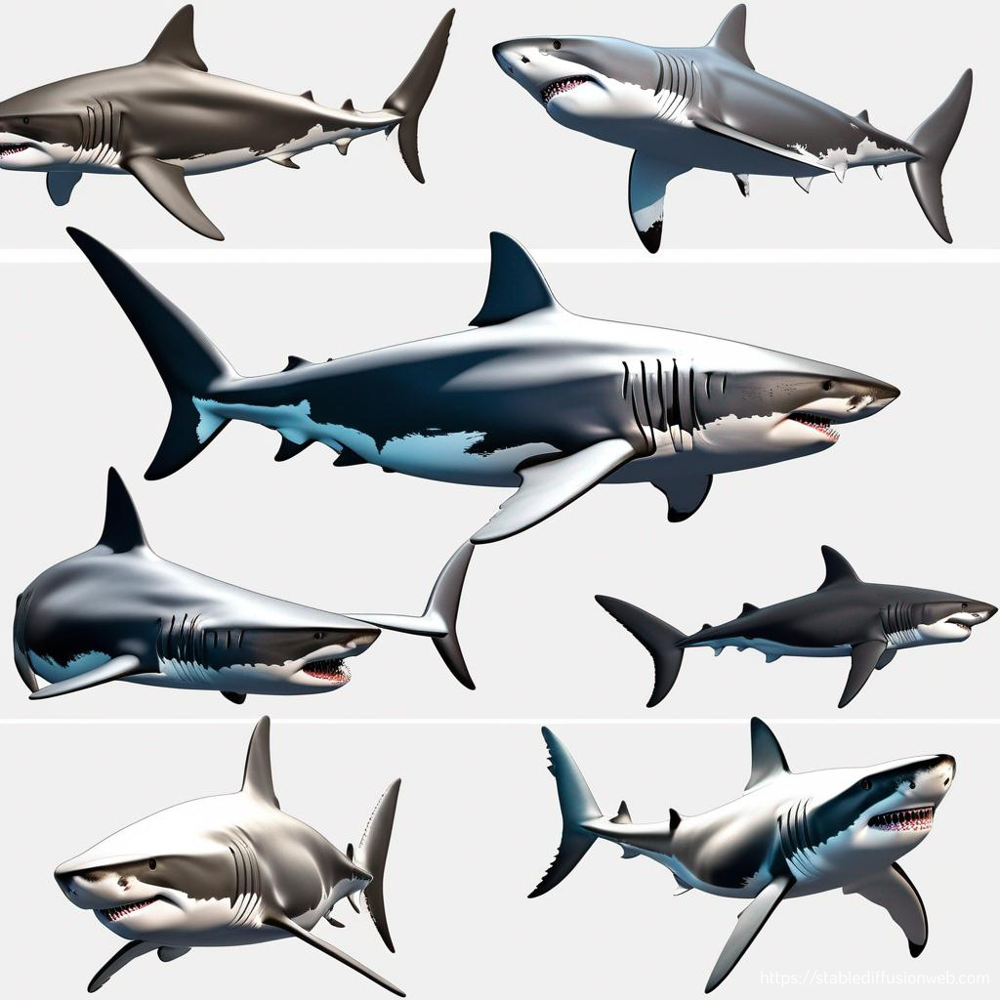
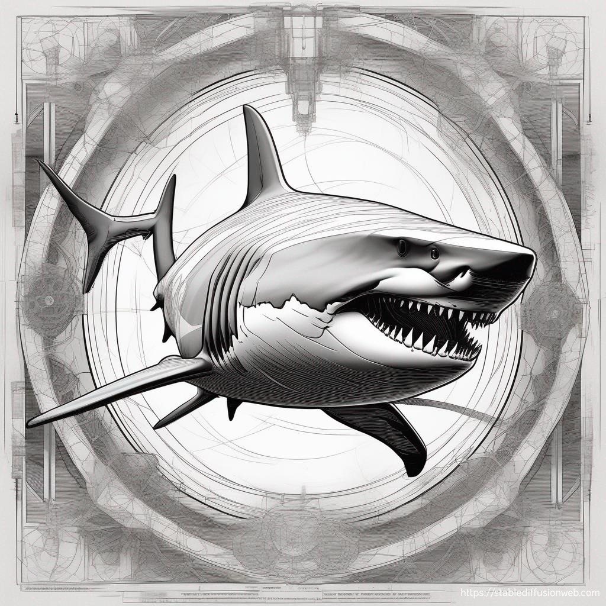
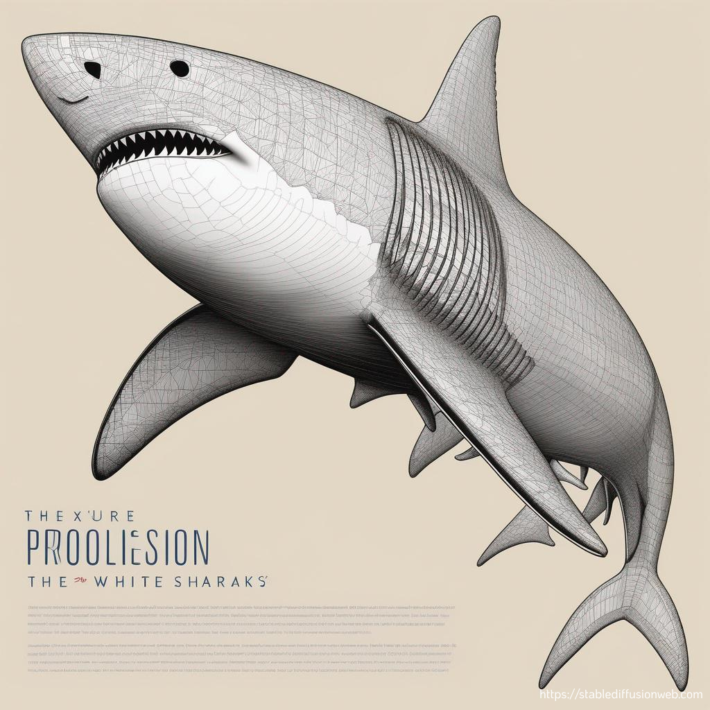
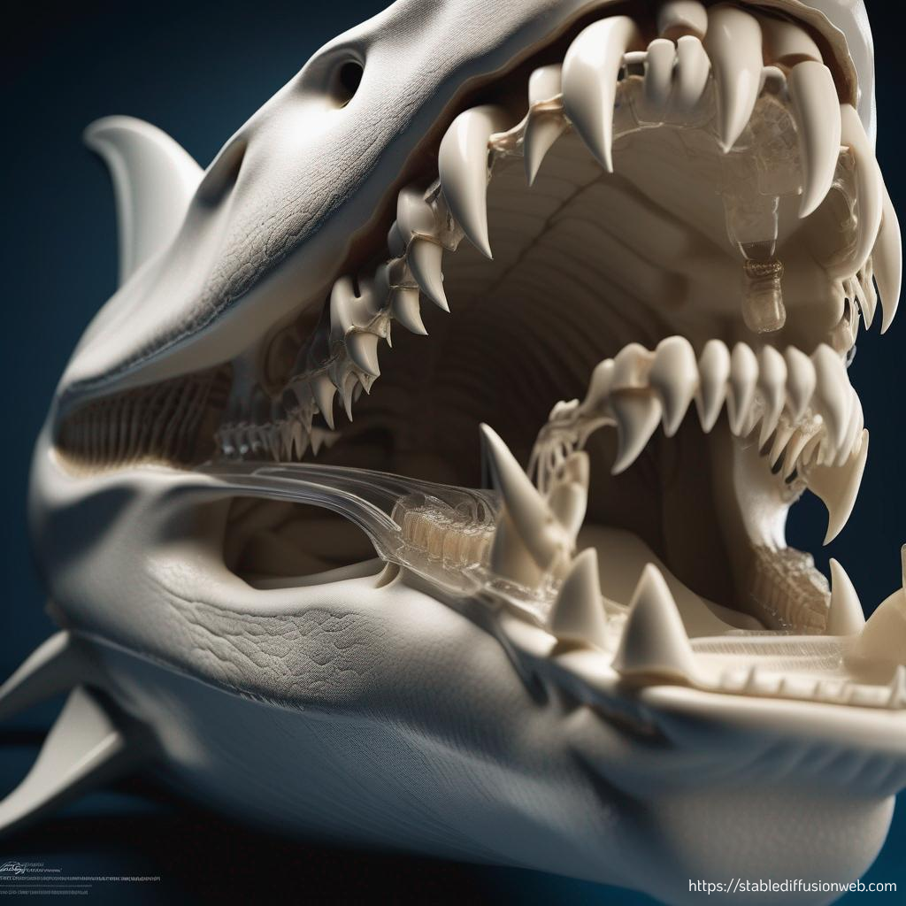
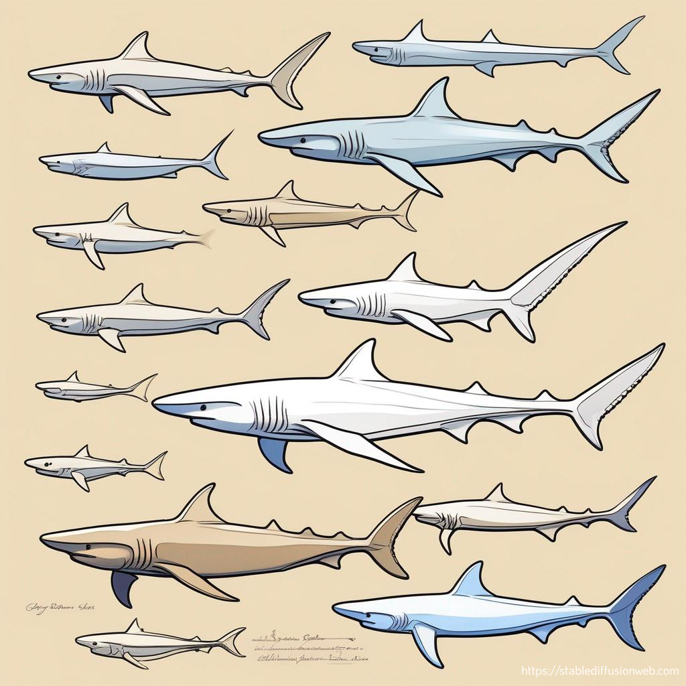

The Unknowns of the "White" Shark

Sistem Integumentary
Kulit Great White Shark adalah salah satu lapisan pertahanan utama tubuhnya. Kulit mereka biasanya kasar dan diselubungi oleh sisik-sisik kecil berbentuk segitiga yang disebut dermal denticles, yang lebih mirip gigi daripada sisik ikan. Dermal denticles ini membantu mengurangi gesekan dengan air dan menjaga tubuh mereka agar tetap aerodinamis saat berenang, memungkinkan hiu berenang lebih cepat dan lebih tenang.
Warna tubuh hiu putih memiliki warna yang khas. Bagian atas tubuhnya biasanya berwarna abu-abu gelap atau coklat tua, sedangkan bagian bawahnya berwarna putih. Warna ini membantu mereka dalam berburu dan bersembunyi dari mangsa maupun predator potensial. Ketika dilihat dari bawah, warna putih membantu mereka menyatu dengan cahaya yang datang dari permukaan air.
Kulit Great White Shark menghasilkan lapisan lendir untuk membantu melembabkan permukaan kulit dan juga dapat digunakan sebagai mekanisme pertahanan dari infeksi bakteri. Ini juga dapat membantu aliran laminar yang lancar, cepat, dan lancar saat berenang (Dean, Bhushan, 2010).

Rangka Tubuh
Great White Shark berukuran hingga 21 kaki (Randall, 1973) . Tubuhnya yang besar dan silindris dengan otot-otot kuat mendukung beratnya hingga 4,500 pounds. Rangka tubuhnya terdiri dari tulang rawan, bukan tulang sejati, yang membuatnya lebih ringan dan fleksibel (Lukyani, 2023).
Bentuk Tubuh
Tubuh Great White Shark berbentuk torpedo atau fusiform, yang sangat aerodinamis. Ini membantu mereka bergerak dengan cepat dan efisien dalam jangka waktu yang lama. Great White Shark dapat meluncur menembus air dengan kecepatan mendekati 35 mil per jam. Tubuhnya berwarna abu-abu di bagian atas dan putih di bawah, memberikan perlindungan saat berburu dari atas dan menyatu dengan cahaya saat dilihat dari bawah.

Bentuk Ekor
Great White Shark memiliki ekor berbentuk bulan sabit atau disebut dengan lunate yang kuat dengan sirip ekor heterocercal, yang berarti sirip bagian atasnya lebih besar daripada bagian bawahnya. Bentuk ini membantu mereka mempertahankan kecepatan tinggi saat berenang dan memanuver dengan presisi.

Letak Mulut
Mulut Great White Shark memiliki tipe mulut yang disebut subterminal. Mulut jenis ini memungkinkan hiu putih untuk menangkap mangsa dengan efisien, terutama saat mereka memburu dan memakan ikan, hewan laut kecil, dan kadang-kadang mamalia laut. Mulut Great White Shark terletak di bagian depan kepala. Mulutnya besar, dan mereka memiliki 300 gigi yang tajam di rahang atas dan bawah. Gigi-gigi ini digunakan untuk merobek mangsanya menjadi potongan-potongan seukuran mulut dan ditelan utuh.

Sirip
Great White Shark memiliki beberapa jenis sirip, termasuk sirip dada, sirip punggung, sirip perut, dan sirip ekor. Sirip punggungnya tinggi dan khas, dan sering kali menjadi ciri identifikasi utama, membantu dalam menjaga keseimbangan dan mengendalikan arah saat berenang. Sirip dada memungkinkan pergerakan ke bawah dan pengangkatan (Fisheries and Oceans Canada, 2016).